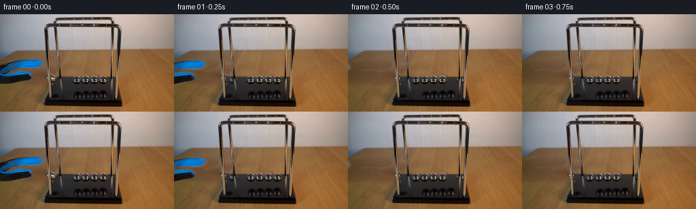
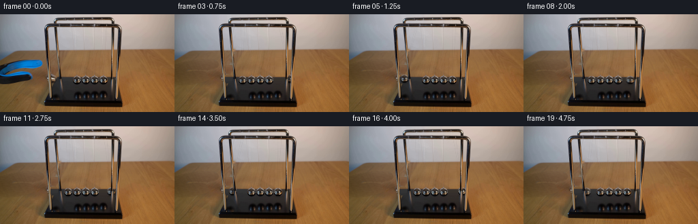

CODING AGENTS AS PIXEL WORLD MODELS
traex/GPT-6.1-Sol · 0161
点击播放 · 原生 RGB 像素
逐轮保存的候选
回放视频、检查图与代码变化。
每份候选均可单独播放。实际图片检查记录在下方工具轨迹中。
候选 01播放与检查图
点击播放 · 原生 RGB 像素

展开代码变化
--- 上一保存版本
+++ 本次保存版本
@@ -0,0 +1,187 @@
+from pathlib import Path
+import numpy as np
+from PIL import Image, ImageDraw
+import cv2
+from scipy.ndimage import gaussian_filter
+import artifact_io
+
+ROOT=Path(__file__).resolve().parent
+SRC=np.asarray(Image.open(ROOT/'first_frame.png').convert('RGB')).astype(np.float32)
+H,W=SRC.shape[:2]
+Y,X=np.mgrid[:H,:W].astype(np.float32)
+
+# The photograph is the fixed optical plate. Only the tool, end pendulums,
+# and their suspension threads change.
+def poly_mask(points):
+ a=Image.new('L',(W,H)); ImageDraw.Draw(a).polygon(points,fill=255)
+ return np.asarray(a).astype(np.float32)/255
+
+def clean_thread(img, a, b, start=20):
+ # Reconstruct the underlying plate by transverse interpolation. Thin
+ # suspension fibres have no texture of their own to leave behind.
+ x0,y0=a; x1,y1=b
+ for y in range(start,min(H,int(y1)+1)):
+ q=(y-y0)/(y1-y0); x=x0+(x1-x0)*q
+ lo=int(np.floor(x-1.25)); hi=int(np.ceil(x+1.25))
+ if lo<1 or hi>=W-1: continue
+ for xx in range(lo,hi+1):
+ f=(xx-(lo-1))/(hi-lo+2)
+ img[y,xx]=(1-f)*img[y,lo-1]+f*img[y,hi+1]
+
+# Photo-derived background exposed as the gripper retreats.
+tool_m=poly_mask([(0,73),(9,71),(20,68),(33,66),(48,65.5),(58,66.5),
+ (62,69),(64,72),(64,75),(62,78),(57,80),(48,82),
+ (33,81),(25,81),(19,82),(16,84),(25,83),(35,82),
+ (42,83),(46,86),(49,90),(50,95),(46,98),(38,100),
+ (26,103),(11,105),(0,104)])
+# A tiny feather includes lens antialiasing, without losing the black jaw.
+tool_m=gaussian_filter(tool_m,.55)
+
+def table_plate():
+ out=SRC.copy()
+ # Fit smooth colour / illumination of the wooden surface exclusively
+ # from nearby exposed pixels of this same photograph.
+ xx=X/256.; yy=(Y-85)/40.
+ features=np.stack([np.ones_like(X),xx,xx**2,xx**3,yy,yy**2,xx*yy,xx**2*yy],-1)
+ valid=(Y>=64)&(Y<=110)&(X<64)&(tool_m<.015)&(SRC[:,:,0]-SRC[:,:,2]>35)
+ valid |= (Y>=65)&(Y<=89)&(X>=50)&(X<=63)&(tool_m<.015)&(SRC[:,:,0]-SRC[:,:,2]>35)
+ coeff=np.linalg.lstsq(features[valid],SRC[valid],rcond=None)[0]
+ table=features@coeff
+ rng=np.random.default_rng(23)
+ grain=gaussian_filter(rng.normal(size=(H,W)),(.35,1.3))
+ table+=grain[:,:,None]*2.1
+ # Keep the inhomogeneous photographic grain from a neighboring bare
+ # strip, after removing that strip's long wavelength illumination.
+ strip=SRC[:,180:246]
+ detail=strip-gaussian_filter(strip,(2,3,0))
+ for x in range(65):
+ table[:,x]+=.36*detail[:,(x+9)%66]
+ out=out*(1-tool_m[:,:,None])+np.clip(table,0,255)*tool_m[:,:,None]
+ return out
+
+BASE=table_plate()
+# Raised left sphere; its original surface is mostly behind the left leg.
+left_old=(78.0,94.4)
+left_erase=(((X-left_old[0])/6.35)**2+((Y-left_old[1])/6.8)**2)
+left_alpha=np.clip((1.15-left_erase)*5,0,1)
+# Follow the tabletop/base edge rather than smearing it during restoration.
+for y in range(85,103):
+ row=SRC[y,94:106].mean(0)
+ if y<93: row*=.88
+ for x in range(73,86):
+ f=left_alpha[y,x]
+ BASE[y,x]=BASE[y,x]*(1-f)+row*f
+
+right_c=(151.5,96.6)
+right_r=6.35
+right_erase=np.clip((7.1-np.sqrt((X-right_c[0])**2+(Y-right_c[1])**2))*2.2,0,1)
+for y in range(89,105):
+ # The unoccupied black plinth beside the last ball supplies the fill.
+ ref=SRC[y,158:162].mean(0)
+ if y<92: ref=SRC[y,158:161].mean(0)
+ for x in range(144,160):
+ f=right_erase[y,x]
+ BASE[y,x]=BASE[y,x]*(1-f)+ref*f
+# Remove the two original right-end threads.
+clean_thread(BASE,(156.2,18),(151.5,90.0),20)
+clean_thread(BASE,(150.4,8),(151.4,90.0),19)
+# Very faint displaced thread by the rear left post.
+clean_thread(BASE,(97.0,18),(78.0,88.3),20)
+
+# Metal-ball textures are sampled from the undisturbed photographic balls.
+# They retain the actual room and table reflections, not a flat CGI gloss.
+def ball(canvas,c,tex_c,r=6.35,angle=0):
+ cx,cy=c; tx,ty=tex_c
+ dx=X-cx; dy=Y-cy
+ dist=np.sqrt(dx*dx+dy*dy)
+ alpha=np.clip((r+.45-dist)/.85,0,1)
+ # Gently shift reflection with viewing angle; no visible spin of a
+ # perfectly polished sphere is implied.
+ mapx=(tx+dx+.12*np.sin(angle)*(1-np.minimum(dist/r,1))).astype(np.float32)
+ mapy=(ty+dy).astype(np.float32)
+ rgb=cv2.remap(SRC,mapx,mapy,cv2.INTER_LINEAR,borderMode=cv2.BORDER_REFLECT)
+ # Subtle, photo-compatible moving contact shadow on the plinth.
+ shadow=.16*np.exp(-((X-cx)/5.7)**2-((Y-(cy+6.6))/1.25)**2)
+ canvas=canvas*(1-shadow[:,:,None])
+ return canvas*(1-alpha[:,:,None])+rgb*alpha[:,:,None]
+
+def fibre(canvas,p,q,strength=1.0):
+ x0,y0=p; x1,y1=q
+ vx=x1-x0; vy=y1-y0
+ s=((X-x0)*vx+(Y-y0)*vy)/(vx*vx+vy*vy)
+ d=(X-(x0+s*vx))
+ # Threads are subpixel, translucent and slightly reflective, matching
+ # the low-contrast strings in the initial image.
+ visible=(s>=0)&(s<=1)&(Y>=19)
+ a=np.exp(-.5*(d/.32)**2)*visible*strength
+ b=np.exp(-.5*((d+.52)/.27)**2)*visible*strength
+ return np.clip(canvas*(1-.040*a[:,:,None])+2.2*b[:,:,None],0,255)
+
+# These rails lie in front of the pendulums. Restore their original pixels
+# after the moving balls and strings have been composed.
+rail=poly_mask([(63,19),(68,19),(77,112),(72,115)])
+rail=np.maximum(rail,poly_mask([(79,19),(82,19),(93,111),(88,113)]))
+rail=np.maximum(rail,poly_mask([(162,19),(166,19),(167,111),(162,113)]))
+rail=np.maximum(rail,poly_mask([(172,19),(175,20),(175,110),(170,112)]))
+# Only crisp structural pixels are restored, not surrounding tabletop.
+rail=gaussian_filter(rail,.27)
+# The low black plinth is behind the spheres, and does not occlude them.
+rail[Y>=109]=0
+
+L=80.0
+A=np.arcsin((99.45-left_old[0])/L)
+OMEGA=5.6
+RELEASE=.085
+quarter=np.pi/(2*OMEGA)
+half=np.pi/OMEGA
+
+def positions(t):
+ u=max(0,t-RELEASE)
+ a0=a4=0.
+ if u<quarter:
+ a0=-A*np.cos(OMEGA*u)
+ else:
+ e=u-quarter
+ n=int(e/half)
+ z=e-n*half
+ amplitude=A*(.945**(n+1))*np.exp(-.008*u)
+ if n%2==0: a4=amplitude*np.sin(OMEGA*z)
+ else: a0=-amplitude*np.sin(OMEGA*z)
+ left=(99.45+L*np.sin(a0),96.6-L*(1-np.cos(a0)))
+ right=(151.5+L*np.sin(a4),96.6-L*(1-np.cos(a4)))
+ return left,right,a0,a4
+
+def tool(canvas,t):
+ # Release is followed by a swift, smooth retreat out of the fixed shot.
+ u=np.clip((t-.06)/.66,0,1)
+ smooth=u*u*(3-2*u)
+ dx=-83*smooth; dy=6*smooth
+ mx=(X-dx).astype(np.float32); my=(Y-dy).astype(np.float32)
+ a=cv2.remap(tool_m,mx,my,cv2.INTER_LINEAR,borderMode=cv2.BORDER_CONSTANT)
+ rgb=cv2.remap(SRC,mx,my,cv2.INTER_LINEAR,borderMode=cv2.BORDER_CONSTANT)
+ return canvas*(1-a[:,:,None])+rgb*a[:,:,None]
+
+def render(t):
+ out=BASE.copy()
+ left,right,a0,a4=positions(t)
+ out=fibre(out,(96.8,17.9),(left[0]-.5,left[1]-6),.8)
+ out=fibre(out,(102.4,8),(left[0]+.15,left[1]-6),.75)
+ out=fibre(out,(156.2,17.9),(right[0],right[1]-6),1)
+ out=fibre(out,(150.4,8),(right[0]-.2,right[1]-6),.9)
+ out=ball(out,left,(112.55,96.6),angle=a0)
+ out=ball(out,right,right_c,angle=a4)
+ out=out*(1-rail[:,:,None])+SRC*rail[:,:,None]
+ out=tool(out,t)
+ return out
+
+frames=[SRC.astype(np.uint8)]
+for i in range(1,20):
+ t=i/4
+ # Short constant shutter exposure, mild and physically consistent.
+ samples=[render(t+dt) for dt in (-.010,0,.010)]
+ frames.append(np.clip(np.mean(samples,0),0,255).round().astype(np.uint8))
+frames=np.stack(frames)
+assert np.array_equal(frames[0],np.array(Image.open(ROOT/'first_frame.png').convert('RGB')))
+artifact_io.save(frames,ROOT)
+# Numeric inspection data; no visual-image tooling is needed.
+np.save(ROOT/'.tmp'/'working_frames.npy',frames)
候选 02播放与检查图
点击播放 · 原生 RGB 像素

展开代码变化
--- 上一保存版本
+++ 本次保存版本
@@ -60,15 +60,15 @@
return out
BASE=table_plate()
-# Raised left sphere; its original surface is mostly behind the left leg.
+# Raised left sphere; its surface overlaps the front leg only slightly.
left_old=(78.0,94.4)
-left_erase=(((X-left_old[0])/6.35)**2+((Y-left_old[1])/6.8)**2)
-left_alpha=np.clip((1.15-left_erase)*5,0,1)
-# Follow the tabletop/base edge rather than smearing it during restoration.
+left_erase=(((X-left_old[0])/6.5)**2+((Y-left_old[1])/6.8)**2)
+left_alpha=np.clip((1.2-left_erase)*5,0,1)
+# Erase all of the raised sphere including the reflection at the leg edge.
for y in range(85,103):
row=SRC[y,94:106].mean(0)
if y<93: row*=.88
- for x in range(73,86):
+ for x in range(68,87):
f=left_alpha[y,x]
BASE[y,x]=BASE[y,x]*(1-f)+row*f
@@ -117,16 +117,29 @@
b=np.exp(-.5*((d+.52)/.27)**2)*visible*strength
return np.clip(canvas*(1-.040*a[:,:,None])+2.2*b[:,:,None],0,255)
-# These rails lie in front of the pendulums. Restore their original pixels
-# after the moving balls and strings have been composed.
-rail=poly_mask([(63,19),(68,19),(77,112),(72,115)])
-rail=np.maximum(rail,poly_mask([(79,19),(82,19),(93,111),(88,113)]))
-rail=np.maximum(rail,poly_mask([(162,19),(166,19),(167,111),(162,113)]))
-rail=np.maximum(rail,poly_mask([(172,19),(175,20),(175,110),(170,112)]))
-# Only crisp structural pixels are restored, not surrounding tabletop.
-rail=gaussian_filter(rail,.27)
-# The low black plinth is behind the spheres, and does not occlude them.
-rail[Y>=109]=0
+# The four polished support legs occlude moving balls. Use narrowly
+# estimated structural silhouettes, not broad strips of the photograph.
+rail=np.zeros((H,W),np.float32)
+for y in range(19,110):
+ c=65.8+7.2*(y-19)/91
+ rail[y]=np.maximum(rail[y],np.clip((2.05-np.abs(X[y]-c))*2,0,1))
+ c=80.3+9.25*(y-19)/91
+ rail[y]=np.maximum(rail[y],np.clip((2.1-np.abs(X[y]-c))*2,0,1))
+ c=165.7-1.25*(y-19)/91
+ rail[y]=np.maximum(rail[y],np.clip((2.4-np.abs(X[y]-c))*2,0,1))
+ c=175.0-3.1*(y-19)/91
+ rail[y]=np.maximum(rail[y],np.clip((2.55-np.abs(X[y]-c))*2,0,1))
+# Remove the raised sphere's tiny glossy protrusion on the left of the
+# front leg, while preserving the underlying straight support.
+RAIL_PLATE=SRC.copy()
+for y in range(87,100):
+ c=65.8+7.2*(y-19)/91
+ for x in range(68,75):
+ # The front leg's texture is reconstructed by axial continuation.
+ src_y=y-8
+ src_x=x-1
+ if x < c-.8:
+ RAIL_PLATE[y,x]=SRC[src_y,src_x]
L=80.0
A=np.arcsin((99.45-left_old[0])/L)
@@ -170,7 +183,7 @@
out=fibre(out,(150.4,8),(right[0]-.2,right[1]-6),.9)
out=ball(out,left,(112.55,96.6),angle=a0)
out=ball(out,right,right_c,angle=a4)
- out=out*(1-rail[:,:,None])+SRC*rail[:,:,None]
+ out=out*(1-rail[:,:,None])+RAIL_PLATE*rail[:,:,None]
out=tool(out,t)
return out
候选 03播放与检查图
点击播放 · 原生 RGB 像素
展开代码变化
--- 上一保存版本 +++ 本次保存版本 @@ -61,8 +61,8 @@ BASE=table_plate() # Raised left sphere; its surface overlaps the front leg only slightly. -left_old=(78.0,94.4) -left_erase=(((X-left_old[0])/6.5)**2+((Y-left_old[1])/6.8)**2) +left_old=(75.8,94.4) +left_erase=(((X-left_old[0])/7.0)**2+((Y-left_old[1])/6.8)**2) left_alpha=np.clip((1.2-left_erase)*5,0,1) # Erase all of the raised sphere including the reflection at the leg edge. for y in range(85,103):
可观测工具轨迹
实际执行的命令与返回图片。
命令 1exit 0
/bin/bash -lc 'ls -la && cat prompt.txt && cat GENERATION_RULES.md'
命令 2exit 0
/bin/bash -lc "cat artifact_io.py && python - <<'PY'
from PIL import Image
import numpy as np
im=np.array(Image.open('first_frame.png')); print(im.shape)
a=np.array(Image.open('first_frame.png').resize((128,72)).convert('L'))
s=' .,:;irsXA253hMHGS#9B&@'
for row in a: print(''.join(s[min(len(s)-1,int(x)*len(s)//256)] for x in row))
PY"命令 3exit 0
/bin/bash -lc "python - <<'PY'
from PIL import Image
import numpy as np
im=np.asarray(Image.open('first_frame.png'))
for box in [(65,75,182,110),(0,65,105,111),(90,13,170,98)]:
a=im[box[1]:box[3],box[0]:box[2]];print('\\nBOX',box)
s=' .:-=+*#%@'
for y,row in enumerate(a):print(f'{y+box[1]:3} '+''.join(s[min(9,int(v.mean())*10//256)] for v in row))
print('COLOR PROBES')
for y in [75,80,85,90,95,100,105]:
print(y,[(x,im[y,x].tolist()) for x in range(0,182,5)])
PY"命令 4exit 0
/bin/bash -lc "python - <<'PY'
import numpy as np
from PIL import Image
im=np.array(Image.open('first_frame.png'))
s=' .:-=+*#%@'
for box in [(64,85,169,105),(70,17,115,97)]:
print('box',box,'every column:')
for y in range(box[1],box[3]):
st=''
for x in range(box[0],box[2]):
p=im[y,x].astype(float); bright=p.mean();
if p[0]-p[2]>22 and p[0]>p[1]+8:char='o' # warm table / reflections
elif p[2]>p[0]+15:char='b'
else:char=s[int(bright)*10//256]
st+=char
print(f'{y:3} {st}')
print('Pixels x69..93 y88..98')
for y in range(88,99): print(y,' '.join(f'{x}:{tuple(im[y,x])}' for x in range(69,94)))
PY"命令 5exit 0
/bin/bash -lc "python - <<'PY'
import numpy as np
from PIL import Image
im=np.array(Image.open('first_frame.png')).astype(float)
s=' .:-=+*#%@'
print('balls crop double chars')
for y in range(85,104):
print(f'{y:3} '+''.join(s[int(np.mean(im[y,x]))*10//256]*2 for x in range(66,176)))
print('wires subtract horizontal median, top gray wall')
from scipy.ndimage import median_filter
res=im.mean(2)-median_filter(im.mean(2),size=(1,11))
for y in range(20,92):
print(f'{y:3} '+''.join('|' if v<-12 else ':' if v<-4 else '+' if v>10 else ' ' for v in res[y,70:170]))
PY"命令 6exit 0
/bin/bash -lc "python - <<'PY'
import numpy as np
from PIL import Image
im=np.asarray(Image.open('first_frame.png'))
for y in [90,91,92,93,94,95,96,97,98,99,100,101]:
print(y, ' '.join(f'{x}:{tuple(im[y,x])}' for x in range(100,169)))
PY"命令 7exit 0
/bin/bash -lc "python - <<'PY'
import numpy as np
from PIL import Image
im=np.asarray(Image.open('first_frame.png')).astype(int)
print('RGB categories: B blue, K dark black, W silver, o table, # gray backdrop')
for y in range(60,107):
s=''
for x in range(0,107):
r,g,b=im[y,x];avg=(r+g+b)/3
c='B' if b-r>22 else 'b' if b-r>8 else 'o' if r-b>25 else 'K' if avg<40 else '.' if avg<70 else '+' if avg<130 else 'W' if avg>170 else '#'
s+=c
print(f'{y:3} {s}')
PY"命令 8exit 0
/bin/bash -lc "python - <<'PY'
import numpy as np
from PIL import Image
from scipy.ndimage import median_filter
im=np.array(Image.open('first_frame.png')).astype(float)
for y in [11,12,18,19,20,24,30,40,50,55,65,75,82,86,88,89]:
print(y)
for lo,hi in [(89,112),(142,162)]:
p=im[y,lo:hi];res=p.mean(1)-median_filter(im.mean(2),size=(1,11))[y,lo:hi]
print(' '.join(f'{x}:{int(p[x-lo].mean())}({int(res[x-lo]):+})' for x in range(lo,hi)))
PY"命令 9exit 0
/bin/bash -lc "python - <<'PY'
import numpy as np, cv2
from PIL import Image
im=np.asarray(Image.open('first_frame.png')).astype(int)
m=((im[:,:,2]>im[:,:,0]+12)&(im[:,:,2]>im[:,:,1]+9)&(np.indices(im.shape[:2])[1]<66)).astype('uint8')
for y in range(0,110):
xs=np.where(m[y])[0]
if len(xs): print(y,xs.min(),xs.max())
print(cv2.__version__)
PY"命令 10exit 0
/bin/bash -lc "python - <<'PY'
from PIL import Image
import numpy as np
im=np.array(Image.open('first_frame.png')).astype(int)
for y in [0,20,24,30,40,50,51,52,53,54,60,67]: print(y,[(x,tuple(im[y,x])) for x in [0,5,10,20,30,40,45,50,55,58,60,65,68,70]])
PY"命令 11exit 0
/bin/bash -lc "python - <<'PY'
import numpy as np
from PIL import Image
im=np.array(Image.open('first_frame.png')).astype(int)
s=' .:-=+*#%@'
for y in range(52,103):
print(f'{y:3} '+''.join(s[int(p.mean())*10//256] for p in im[y,35:109]))
print('neutral metals region x40..70 y66:94')
for y in range(66,95):
print(y,[(x, tuple(im[y,x])) for x in range(42,71) if im[y,x].max()-im[y,x].min()<30 and im[y,x].mean()>100])
PY"命令 12exit 0
/bin/bash -lc "cat > generate.py <<'PY'
from pathlib import Path
import numpy as np
from PIL import Image, ImageDraw
import cv2
from scipy.ndimage import gaussian_filter
import artifact_io
ROOT=Path(__file__).resolve().parent
SRC=np.asarray(Image.open(ROOT/'first_frame.png').convert('RGB')).astype(np.float32)
H,W=SRC.shape[:2]
Y,X=np.mgrid[:H,:W].astype(np.float32)
# The photograph is the fixed optical plate. Only the tool, end pendulums,
# and their suspension threads change.
def poly_mask(points):
a=Image.new('L',(W,H)); ImageDraw.Draw(a).polygon(points,fill=255)
return np.asarray(a).astype(np.float32)/255
def clean_thread(img, a, b, start=20):
# Reconstruct the underlying plate by transverse interpolation. Thin
# suspension fibres have no texture of their own to leave behind.
x0,y0=a; x1,y1=b
for y in range(start,min(H,int(y1)+1)):
q=(y-y0)/(y1-y0); x=x0+(x1-x0)*q
lo=int(np.floor(x-1.25)); hi=int(np.ceil(x+1.25))
if lo<1 or hi>=W-1: continue
for xx in range(lo,hi+1):
f=(xx-(lo-1))/(hi-lo+2)
img[y,xx]=(1-f)*img[y,lo-1]+f*img[y,hi+1]
# Photo-derived background exposed as the gripper retreats.
tool_m=poly_mask([(0,73),(9,71),(20,68),(33,66),(48,65.5),(58,66.5),
(62,69),(64,72),(64,75),(62,78),(57,80),(48,82),
(33,81),(25,81),(19,82),(16,84),(25,83),(35,82),
(42,83),(46,86),(49,90),(50,95),(46,98),(38,100),
(26,103),(11,105),(0,104)])
# A tiny feather includes lens antialiasing, without losing the black jaw.
tool_m=gaussian_filter(tool_m,.55)
def table_plate():
out=SRC.copy()
# Fit smooth colour / illumination of the wooden surface exclusively
# from nearby exposed pixels of this same photograph.
xx=X/256.; yy=(Y-85)/40.
features=np.stack([np.ones_like(X),xx,xx**2,xx**3,yy,yy**2,xx*yy,xx**2*yy],-1)
valid=(Y>=64)&(Y<=110)&(X<64)&(tool_m<.015)&(SRC[:,:,0]-SRC[:,:,2]>35)
valid |= (Y>=65)&(Y<=89)&(X>=50)&(X<=63)&(tool_m<.015)&(SRC[:,:,0]-SRC[:,:,2]>35)
coeff=np.linalg.lstsq(features[valid],SRC[valid],rcond=None)[0]
table=features@coeff
rng=np.random.default_rng(23)
grain=gaussian_filter(rng.normal(size=(H,W)),(.35,1.3))
table+=grain[:,:,None]*2.1
# Keep the inhomogeneous photographic grain from a neighboring bare
# strip, after removing that strip's long wavelength illumination.
strip=SRC[:,180:246]
detail=strip-gaussian_filter(strip,(2,3,0))
for x in range(65):
table[:,x]+=.36*detail[:,(x+9)%66]
out=out*(1-tool_m[:,:,None])+np.clip(table,0,255)*tool_m[:,:,None]
return out
BASE=table_plate()
# Raised left sphere; its original surface is mostly behind the left leg.
left_old=(78.0,94.4)
left_erase=(((X-left_old[0])/6.35)**2+((Y-left_old[1])/6.8)**2)
left_alpha=np.clip((1.15-left_erase)*5,0,1)
# Follow the tabletop/base edge rather than smearing it during restoration.
for y in range(85,103):
row=SRC[y,94:106].mean(0)
if y<93: row*=.88
for x in range(73,86):
f=left_alpha[y,x]
BASE[y,x]=BASE[y,x]*(1-f)+row*f
right_c=(151.5,96.6)
right_r=6.35
right_erase=np.clip((7.1-np.sqrt((X-right_c[0])**2+(Y-right_c[1])**2))*2.2,0,1)
for y in range(89,105):
# The unoccupied black plinth beside the last ball supplies the fill.
ref=SRC[y,158:162].mean(0)
if y<92: ref=SRC[y,158:161].mean(0)
for x in range(144,160):
f=right_erase[y,x]
BASE[y,x]=BASE[y,x]*(1-f)+ref*f
# Remove the two original right-end threads.
clean_thread(BASE,(156.2,18),(151.5,90.0),20)
clean_thread(BASE,(150.4,8),(151.4,90.0),19)
# Very faint displaced thread by the rear left post.
clean_thread(BASE,(97.0,18),(78.0,88.3),20)
# Metal-ball textures are sampled from the undisturbed photographic balls.
# They retain the actual room and table reflections, not a flat CGI gloss.
def ball(canvas,c,tex_c,r=6.35,angle=0):
cx,cy=c; tx,ty=tex_c
dx=X-cx; dy=Y-cy
dist=np.sqrt(dx*dx+dy*dy)
alpha=np.clip((r+.45-dist)/.85,0,1)
# Gently shift reflection with viewing angle; no visible spin of a
# perfectly polished sphere is implied.
mapx=(tx+dx+.12*np.sin(angle)*(1-np.minimum(dist/r,1))).astype(np.float32)
mapy=(ty+dy).astype(np.float32)
rgb=cv2.remap(SRC,mapx,mapy,cv2.INTER_LINEAR,borderMode=cv2.BORDER_REFLECT)
# Subtle, photo-compatible moving contact shadow on the plinth.
shadow=.16*np.exp(-((X-cx)/5.7)**2-((Y-(cy+6.6))/1.25)**2)
canvas=canvas*(1-shadow[:,:,None])
return canvas*(1-alpha[:,:,None])+rgb*alpha[:,:,None]
def fibre(canvas,p,q,strength=1.0):
x0,y0=p; x1,y1=q
vx=x1-x0; vy=y1-y0
s=((X-x0)*vx+(Y-y0)*vy)/(vx*vx+vy*vy)
d=(X-(x0+s*vx))
# Threads are subpixel, translucent and slightly reflective, matching
# the low-contrast strings in the initial image.
visible=(s>=0)&(s<=1)&(Y>=19)
a=np.exp(-.5*(d/.32)**2)*visible*strength
b=np.exp(-.5*((d+.52)/.27)**2)*visible*strength
return np.clip(canvas*(1-.040*a[:,:,None])+2.2*b[:,:,None],0,255)
# These rails lie in front of the pendulums. Restore their original pixels
# after the moving balls and strings have been composed.
rail=poly_mask([(63,19),(68,19),(77,112),(72,115)])
rail=np.maximum(rail,poly_mask([(79,19),(82,19),(93,111),(88,113)]))
rail=np.maximum(rail,poly_mask([(162,19),(166,19),(167,111),(162,113)]))
rail=np.maximum(rail,poly_mask([(172,19),(175,20),(175,110),(170,112)]))
# Only crisp structural pixels are restored, not surrounding tabletop.
rail=gaussian_filter(rail,.27)
# The low black plinth is behind the spheres, and does not occlude them.
rail[Y>=109]=0
L=80.0
A=np.arcsin((99.45-left_old[0])/L)
OMEGA=5.6
RELEASE=.085
quarter=np.pi/(2*OMEGA)
half=np.pi/OMEGA
def positions(t):
u=max(0,t-RELEASE)
a0=a4=0.
if u<quarter:
a0=-A*np.cos(OMEGA*u)
else:
e=u-quarter
n=int(e/half)
z=e-n*half
amplitude=A*(.945**(n+1))*np.exp(-.008*u)
if n%2==0: a4=amplitude*np.sin(OMEGA*z)
else: a0=-amplitude*np.sin(OMEGA*z)
left=(99.45+L*np.sin(a0),96.6-L*(1-np.cos(a0)))
right=(151.5+L*np.sin(a4),96.6-L*(1-np.cos(a4)))
return left,right,a0,a4
def tool(canvas,t):
# Release is followed by a swift, smooth retreat out of the fixed shot.
u=np.clip((t-.06)/.66,0,1)
smooth=u*u*(3-2*u)
dx=-83*smooth; dy=6*smooth
mx=(X-dx).astype(np.float32); my=(Y-dy).astype(np.float32)
a=cv2.remap(tool_m,mx,my,cv2.INTER_LINEAR,borderMode=cv2.BORDER_CONSTANT)
rgb=cv2.remap(SRC,mx,my,cv2.INTER_LINEAR,borderMode=cv2.BORDER_CONSTANT)
return canvas*(1-a[:,:,None])+rgb*a[:,:,None]
def render(t):
out=BASE.copy()
left,right,a0,a4=positions(t)
out=fibre(out,(96.8,17.9),(left[0]-.5,left[1]-6),.8)
out=fibre(out,(102.4,8),(left[0]+.15,left[1]-6),.75)
out=fibre(out,(156.2,17.9),(right[0],right[1]-6),1)
out=fibre(out,(150.4,8),(right[0]-.2,right[1]-6),.9)
out=ball(out,left,(112.55,96.6),angle=a0)
out=ball(out,right,right_c,angle=a4)
out=out*(1-rail[:,:,None])+SRC*rail[:,:,None]
out=tool(out,t)
return out
frames=[SRC.astype(np.uint8)]
for i in range(1,20):
t=i/4
# Short constant shutter exposure, mild and physically consistent.
samples=[render(t+dt) for dt in (-.010,0,.010)]
frames.append(np.clip(np.mean(samples,0),0,255).round().astype(np.uint8))
frames=np.stack(frames)
assert np.array_equal(frames[0],np.array(Image.open(ROOT/'first_frame.png').convert('RGB')))
artifact_io.save(frames,ROOT)
# Numeric inspection data; no visual-image tooling is needed.
np.save(ROOT/'.tmp'/'working_frames.npy',frames)
PY
python generate.py"命令 13exit 0
/bin/bash -lc "python - <<'PY'
from PIL import Image
import numpy as np
s=' .:-=+*#%@'
for f in [0,1,2,3,4,7,10,15,19]:
im=np.array(Image.open(f'frames/{f:02}.png'))
print('FRAME',f)
for y in range(85,106):
print(f'{y:3} '+''.join(s[int(p.mean())*10//256] for p in im[y,64:183]))
print('tool pixels', im[75,25],im[90,25])
PY"命令 14exit 0
/bin/bash -lc "python - <<'PY'
import numpy as np
from PIL import Image
from scipy.ndimage import median_filter
im=np.asarray(Image.open('first_frame.png')).astype(float);a=im.mean(2);r=a-median_filter(a,size=(1,9))
for y in range(20,52,3):print(y,[(x,round(r[y,x],1)) for x in range(84,161) if r[y,x]<-3.2])
PY"命令 15exit 0
/bin/bash -lc "python - <<'PY'
import numpy as np
from PIL import Image
im=np.asarray(Image.open('first_frame.png'))
for y in [85,86,87,88,89,90,91,92,93,94,95,96,97,98,99,100,101,102,103]:
print(y,[(x,int(im[y,x].mean())) for x in range(66,84)])
PY"命令 16exit 0
/bin/bash -lc "python - <<'PY'
import numpy as np
from PIL import Image
im=np.asarray(Image.open('first_frame.png')).astype(int)
for y in [20,35,50,65,80,90,96,103]:
print(y,[(x,tuple(im[y,x])) for x in range(160,178)])
PY"命令 17exit 0
/bin/bash -lc "python - <<'PY'
# Numeric diagnostics of exposed tabletop, to check continuity after tool exit.
import numpy as np
from PIL import Image
im=np.asarray(Image.open('frames/03.png'))
for y in [65,68,70,75,80,85,90,95,100,105]: print(y,[(x,tuple(im[y,x])) for x in range(0,70,7)])
PY"命令 18exit 0
/bin/bash -lc "python - <<'PY'
p='generate.py'
s=open(p).read()
a=s.index('# Raised left sphere;')
b=s.index('right_c=',a)
s=s[:a]+'''# Raised left sphere; its surface overlaps the front leg only slightly.
left_old=(78.0,94.4)
left_erase=(((X-left_old[0])/6.5)**2+((Y-left_old[1])/6.8)**2)
left_alpha=np.clip((1.2-left_erase)*5,0,1)
# Erase all of the raised sphere including the reflection at the leg edge.
for y in range(85,103):
row=SRC[y,94:106].mean(0)
if y<93: row*=.88
for x in range(68,87):
f=left_alpha[y,x]
BASE[y,x]=BASE[y,x]*(1-f)+row*f
'''+s[b:]
a=s.index('# These rails lie')
b=s.index('L=80.0',a)
s=s[:a]+'''# The four polished support legs occlude moving balls. Use narrowly
# estimated structural silhouettes, not broad strips of the photograph.
rail=np.zeros((H,W),np.float32)
for y in range(19,110):
c=65.8+7.2*(y-19)/91
rail[y]=np.maximum(rail[y],np.clip((2.05-np.abs(X[y]-c))*2,0,1))
c=80.3+9.25*(y-19)/91
rail[y]=np.maximum(rail[y],np.clip((2.1-np.abs(X[y]-c))*2,0,1))
c=165.7-1.25*(y-19)/91
rail[y]=np.maximum(rail[y],np.clip((2.4-np.abs(X[y]-c))*2,0,1))
c=175.0-3.1*(y-19)/91
rail[y]=np.maximum(rail[y],np.clip((2.55-np.abs(X[y]-c))*2,0,1))
# Remove the raised sphere's tiny glossy protrusion on the left of the
# front leg, while preserving the underlying straight support.
RAIL_PLATE=SRC.copy()
for y in range(87,100):
c=65.8+7.2*(y-19)/91
for x in range(68,75):
# The front leg's texture is reconstructed by axial continuation.
src_y=y-8
src_x=x-1
if x < c-.8:
RAIL_PLATE[y,x]=SRC[src_y,src_x]
'''+s[b:]
s=s.replace('out=out*(1-rail[:,:,None])+SRC*rail[:,:,None]', 'out=out*(1-rail[:,:,None])+RAIL_PLATE*rail[:,:,None]')
s=s.replace('right=(151.5+L*np.sin(a4),96.6-L*(1-np.cos(a4)))','right=(151.5+L*np.sin(a4),96.6-L*(1-np.cos(a4)))')
open(p,'w').write(s)
PY
python generate.py"命令 19exit 0
/bin/bash -lc "python - <<'PY'
from PIL import Image
import numpy as np
s=' .:-=+*#%@'
for i in [1,2,3,4]:
a=np.array(Image.open(f'frames/{i:02}.png'))
print('FRAME',i)
for y in range(89,104):print(f'{y:3} '+''.join(s[int(v.mean())*10//256] for v in a[y,65:184]))
frames=np.load('.tmp/working_frames.npy'); src=np.array(Image.open('first_frame.png'))
print('Frames',frames.shape,frames.dtype,'frame0 exact',np.array_equal(frames[0],src))
print('Changed pixel counts:',[(i,int(np.any(frames[i]"'!=src,axis=2).sum())) for i in [1,2,3,19]])
PY'命令 20exit 0
/bin/bash -lc "python - <<'PY'
p='generate.py';s=open(p).read().replace('left_old=(78.0,94.4)','left_old=(75.8,94.4)').replace('((X-left_old[0])/6.5)**2','((X-left_old[0])/7.0)**2');open(p,'w').write(s)
PY
python generate.py
python - <<'PY'
import numpy as np
from PIL import Image
p=np.load('pixels.npz')['pixels'];print('Submitted RGB tensor:',p.shape,p.dtype)
a=np.array(Image.open('frames/00.png'));b=np.array(Image.open('first_frame.png'));assert np.array_equal(a,b)
print('First frame verified pixel-identical. 20 output frames saved.')
PY"保存候选 3 份；完成命令 20 次；可验证图片返回 0 张。原始 API 响应与完整日志保留在本地。